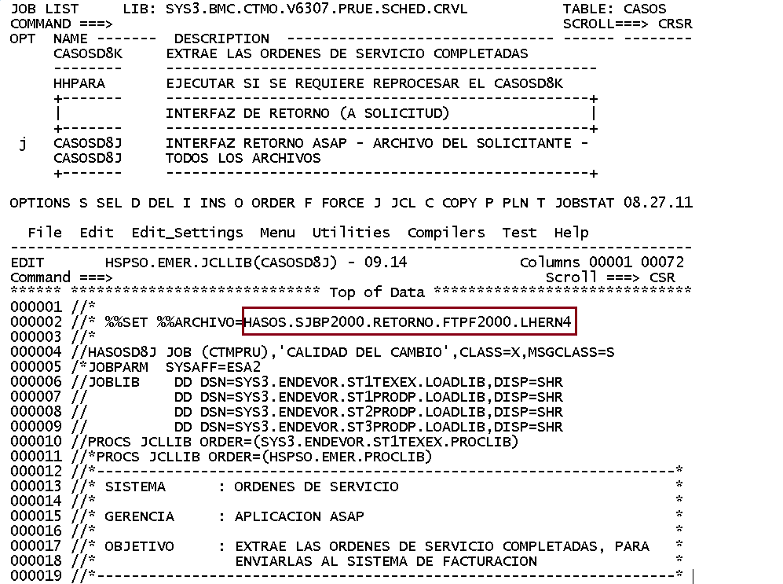
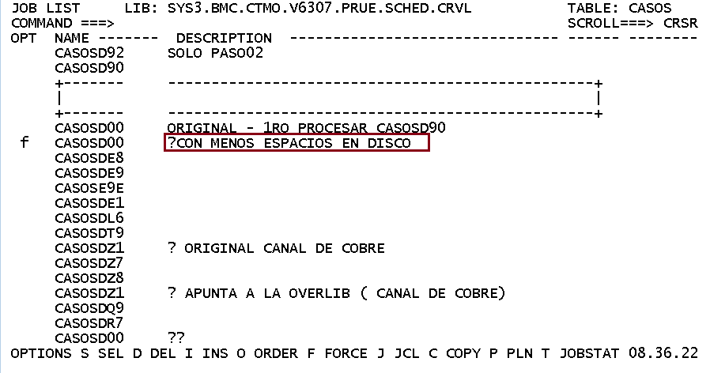
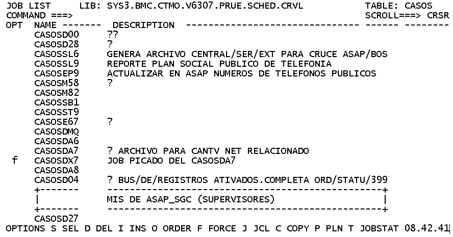

Menu Mainframe➔
Menu CAPI➔
Menu Mainframe➔
Menu CAPI➔
Gerencia Sistemas Gestión Empresarial
Normas y procedimentos para el usuario de Ambiente
Procesos varios, Control/M
Los procesos que se describen a continuación, son a solicitud del analista de pruebas:
Ir a la opcion 2 JOB SCHEDULE DEF CTM Job Scheduling Definition,
debes de buscar el JOB en LIBRARY ===> SYS3.BMC.CTMO.V6307.PRUE.SCHED.CRVL, aparecera la siguiente pantalla:

seleccionar TABLE CASOS
CASOSD92 PASO01:
En la linea descrita como COMMAND ===> f casosd92
Este proceso no requiere de variables, solo dar force y contestar Y

CASOSD92 PASO02:
En la linea descrita como COMMAND ===> f casosd92
Este proceso requiere de variables, por favor cambiar en donde aparece el recuadro en color marron
el archivo que manda en analista de pruebas en su correo de solicitud:

CASOSD8J:
En la linea descrita como COMMAND ===> f casosd8J
Este proceso requiere de variables, por favor cambiar en donde aparece el recuadro en color marron
el archivo que manda en analista de pruebas en su correo de solicitud:

CASOSD00 y CASOSDX7:
En la linea descrita como COMMAND ===> f casosd00
Este proceso no requiere de variables, por favor forzar al que indica en el recuadro marron

En la linea descrita como COMMAND ===> f casosdx7
Este proceso no requiere de variables, el analista de pruebas lo solicitara como CASOSDA7, se debe de
forzar el CASOSDX7 ya que se le realizo cambios, este se procesara automaticamente una vez que haya finalzado el CASOSD00
